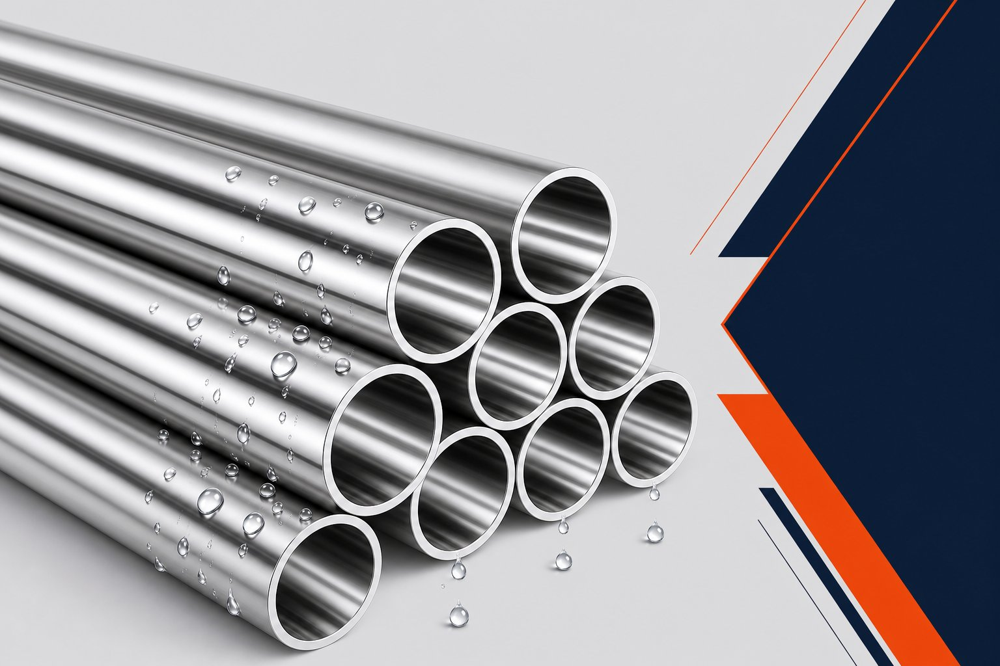

دامنه کاربرد استاندارد لوله استنلس
استاندارد لوله استنلس، مشخصه لولههای بدون درز، درزجوش بدون فلز پرکننده و درزجوش با فلز پرکننده از جنس فولاد زنگنزن آستنیتی را برای سرویسهای خورنده و دمای بالا پوشش میدهد. این لولهها در صنایع شیمیایی، غذایی، دارویی و نفت و گاز کاربرد گسترده دارند و باید در وضعیت عملیات حرارتی مناسب تحویل شوند.

گریدهای اصلی و تفاوت آنها
| گرید | ترکیب شاخص | ویژگی و کاربرد |
|---|---|---|
| ۳۰۴ | کروم-نیکل عمومی | پرمصرفترین گرید عمومی |
| ۳۰۴ ال | کربن محدود | مقاومت بهتر به خوردگی بیندانهای پس از جوشکاری |
| ۳۱۶ | افزودن مولیبدن | مقاومت بالاتر در محیطهای کلریدی |
| ۳۱۶ ال | کربن محدود + مولیبدن | ترکیب مزایای مولیبدن و کمکربن بودن |
| ۳۲۱ و ۳۴۷ | پایدارشده | سرویسهای دمای بالا و سیکلهای حرارتی |
انتخاب گرید تابع ماهیت سیال، دما و ریسک خوردگی سرویس است.
عملیات حرارتی محلولسازی
تمام لولههای این استاندارد باید تحت عملیات حرارتی محلولسازی قرار گیرند: گرم کردن تا دمای مشخص برای انحلال کامل کاربیدها و سرد کردن سریع برای حفظ آنها در محلول جامد. این عملیات مقاومت به خوردگی را به حداکثر میرساند و برای گریدهای پایدارشده نیز الزامی است. وضعیت عملیات حرارتی باید در گواهی مواد قابل ردیابی باشد.
تستها و بازرسیها
- تست هیدرواستاتیک یا جایگزین غیرمخرب مجاز مطابق استاندارد.
- تست مکانیکی شامل کشش و در صورت نیاز تختشدن یا فلنجشدن.
- کنترل ابعاد و ضخامت مطابق استاندارد ابعاد لوله استنلس.
- در سفارشهای خاص، تست خوردگی بیندانهای برای ارزیابی حساسیت.
- بازرسی چشمی سطح و در صورت نیاز تمیزی داخلی.
نکات خرید برای مهندس تدارکات
- گرید را با توجه به ماهیت سیال انتخاب کنید؛ در محیطهای کلریدی گریدهای حاوی مولیبدن را بررسی کنید.
- برای خطوط جوشکاریشده، گریدهای کمکربن را در اولویت قرار دهید.
- روش ساخت (بدون درز یا درزجوش) را متناسب با سایز و فشار مشخص کنید.
- پرداخت سطح و تمیزی را برای سرویسهای بهداشتی در سفارش قید کنید.
- گواهی مواد نوع ۳٫۱ و وضعیت عملیات حرارتی را درخواست کنید.
- برای تأیید هویت متریال در زمان تحویل، تست شناسایی مثبت متریال را در نظر بگیرید.
جمعبندی
لوله استنلس با انتخاب گرید صحیح و کنترل عملیات حرارتی، سالها خدمت مطمئن در سرویسهای خورنده ارائه میدهد. کلید موفقیت، تطابق گرید با سیال و مدارک کامل بازرسی است.
سوالات رایج
تفاوت گریدهای ال با گریدهای معمولی چیست؟
گریدهای ال کربن محدودتری دارند (حداکثر ۰٫۰۳ درصد) که مقاومت به خوردگی بیندانهای پس از جوشکاری را بهبود میدهد. برای خطوط جوشکاریشده در سرویس خورنده، گریدهای ال انتخاب مطمئنتری هستند.
چرا عملیات حرارتی محلولسازی انجام میشود؟
محلولسازی شامل گرم کردن تا دمای بالا و سرد کردن سریع است تا کاربیدها در محلول جامد باقی بمانند و مقاومت به خوردگی به حداکثر برسد. لوله باید در وضعیت محلولسازیشده تحویل شود.
لوله استنلس به چند روش تولید میشود؟
هم به صورت بدون درز و هم درزجوش بدون فلز پرکننده تولید میشود؛ برای قطرهای بزرگتر از روش درزجوش با فلز پرکننده نیز استفاده میشود که استاندارد جداگانهای دارد. انتخاب به سایز، فشار و الزامات سرویس بستگی دارد.
برای سرویسهای بهداشتی چه الزاماتی اضافه میشود؟
پرداخت سطح داخلی، تمیزی و حذف آلودگیهای آهنی اهمیت پیدا میکند. معمولاً پرداخت داخلی و تمیزکاری شیمیایی در سفارش مشخص و در بازرسی کنترل میشود.
مطالب مرتبط
- مقایسه لوله استنلس ۳۰۴ و ۳۱۶
- راهنمای جامع لوله مانیسمان
- راهنمای تست شناسایی مثبت متریال
- راهنمای جنس و متریال فلنج صنعتی
- راهنمای کامل گواهی مواد و تست
در استعلام لوله استنلس، گرید، روش ساخت (بدون درز یا درزجوش)، ابعاد، وضعیت عملیات حرارتی و در صورت نیاز پرداخت سطح را مشخص کنید. برای سرویسهای خاص، شرایط سرویس را ذکر کنید.
مشاهده صفحه محصول ← ثبت RFQ همین محصولتامین این تجهیزات را به پیشرو تجهیز فرتاک بسپارید
شرکت پیشرو تجهیز فرتاک تامینکننده تخصصی تجهیزات صنعتی برای پروژههای نفت، گاز، پتروشیمی، فولاد و نیروگاهی است. برای دریافت پیشنهاد فنی و قیمت، استعلام (RFQ) خود را ثبت کنید تا کارشناسان مهندسی فروش در کوتاهترین زمان پاسخ دهند.
- تامین لوله استنلسلوله استنلس بدون درز و درزجوش با گواهی مواد
- تامین تجهیزات پایپینگفلنج و اتصالات استنلس مطابق مدارک پروژه